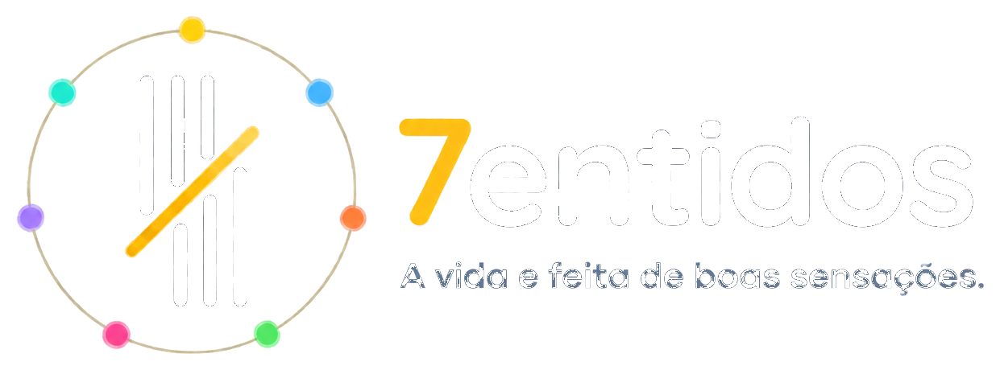
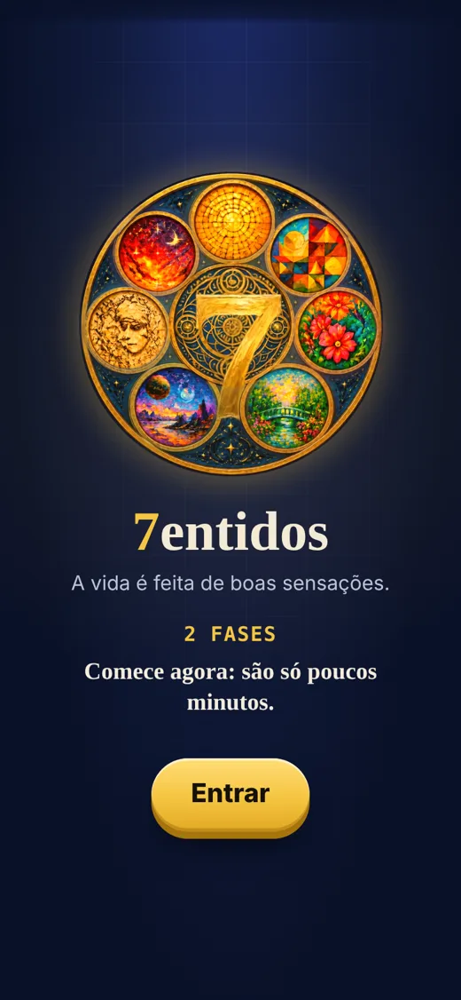
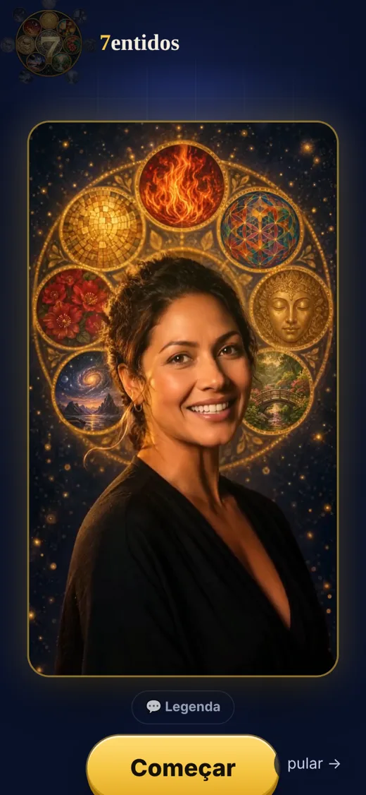

Escolha
Escolha um sentido e responda com um toque: imagens, sons, texturas.

Baixar o appLaboratório de boas sensações
Quanto mais o 7entidos te conhece, mais ele te surpreende, com novas oportunidades de sentir.
Baseado no Flow, de Mihaly Csikszentmihalyi · psicologia positiva
Baixe agora e descubra, junto com o app, o que te faz bem.
No iPhone, o app abre pelo site. Depois é só tocar em Compartilhar → Adicionar à Tela de Início.
Tem mais lá no nosso canal 👉 youtube.com/@7Entidos


Qual sentido vai te fazer bem?
Escolha um sentido e responda com um toque: imagens, sons, texturas.
O app mostra o que te faz bem — e por quê, com a ciência explicada de um jeito fácil.
Guarde suas boas sensações e volte a elas quando o dia pedir.
A Casa dos 7 Sentidos também é uma pesquisa. Observamos o que as pessoas escolhem, como na votação, para entender as boas sensações e construir o app.
Tem mais lá no nosso canal 👉 youtube.com/@7Entidos
Modelo dos 8 canais da experiência (Massimini, Carli e Csikszentmihalyi, 1987), apresentado no livro “Finding Flow” (1997). Sem números: é um mapa, não uma medição.
Nasce em Fiume, na época Itália (hoje Rijeka, Croácia).
Muda para os Estados Unidos para estudar psicologia na Universidade de Chicago.
Doutorado em Chicago, pesquisando a criatividade de artistas.
Lança o livro Flow, que vira best-seller mundial.
Vai para a Claremont Graduate University, na Califórnia.
Com Martin Seligman, publica o artigo que apresenta a psicologia positiva.
Morre aos 87 anos, conhecido como “o pai do Flow”.
Deixe seu nome e seu WhatsApp. A gente avisa quando o app abrir.
O 7entidos é um projeto feito em Santos que junta ciência e sensações.
Para você descobrir — e guardar — o que te faz bem.